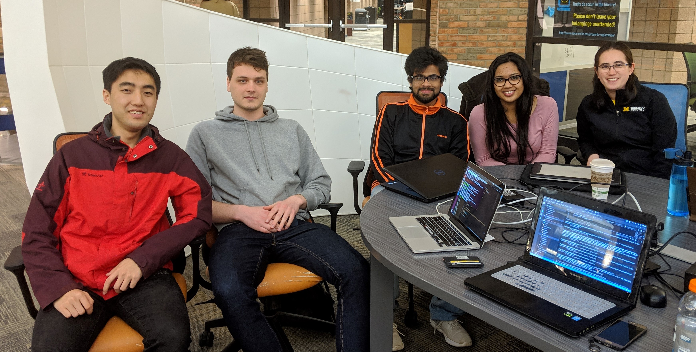
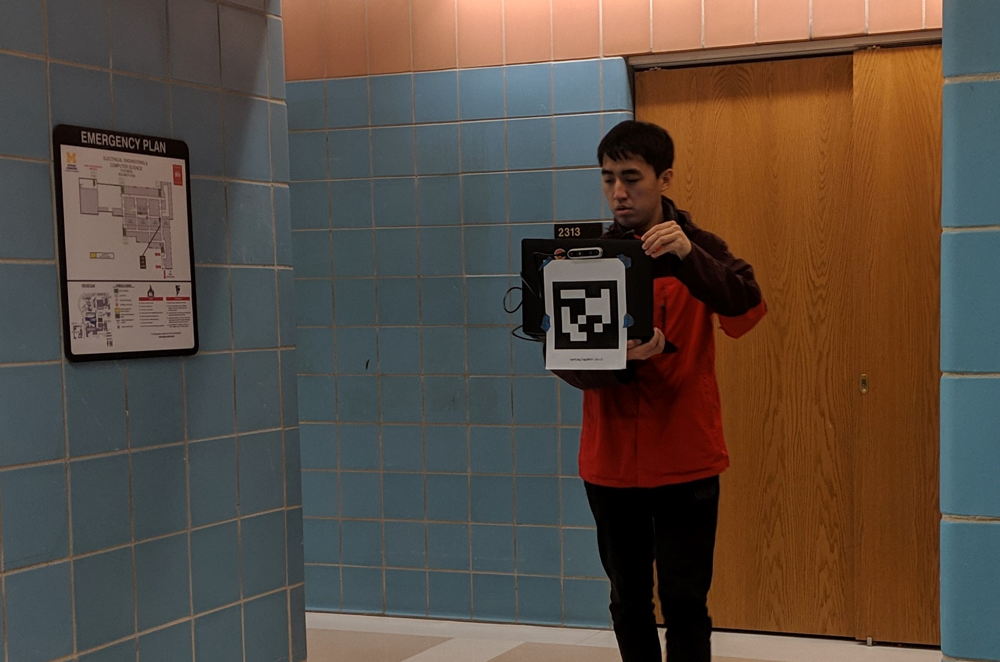
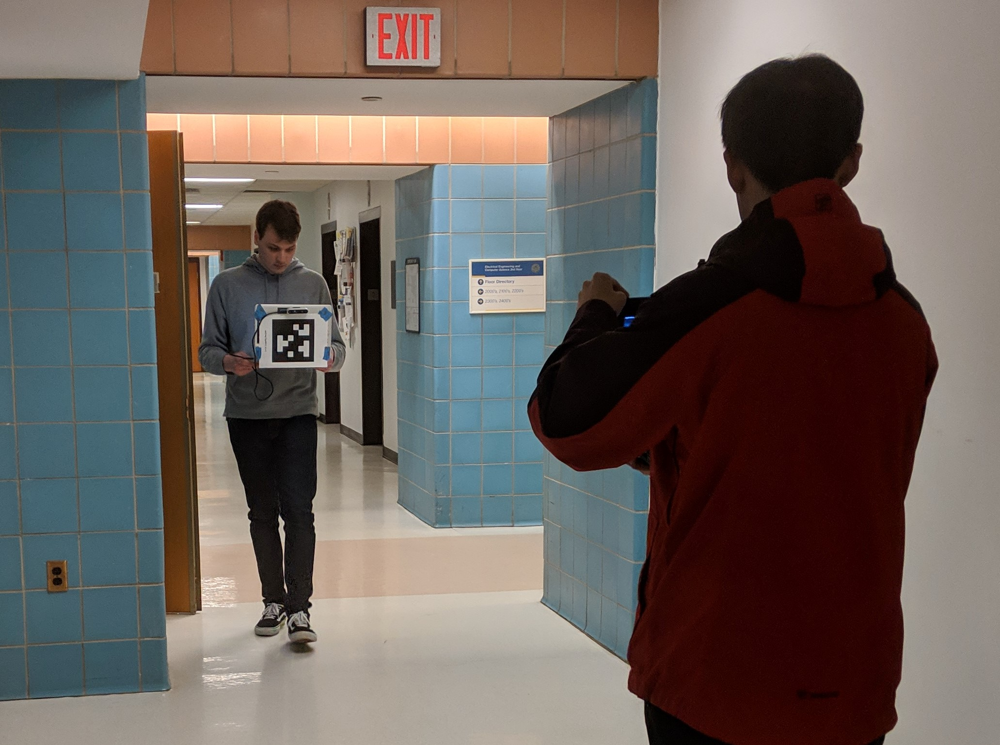

Meet the Team
From left to right:
| Yuanxin Zhong | Mechanical Engineering, Automotive |
| Martin Deegan | Computer Science and Mathematics |
| Kaustav Chakraborty | Robotics |
| Purva Kulkarni | Electrical and Computer Engineering, Embedded Systems |
| Christine Searle | Robotics |
ORB-SLAM
ORB-SLAM is an open source implementation of pose landmark graph SLAM. It supports camera input through the OpenCV library.
Our multi-agent system is an enhancement of the second generation of ORB-SLAM, ORB-SLAM2.
Multi-Agent ORB-SLAM

Two are better than one, because they have a good return for their labor: if either of them falls down, one can help the other up.
There are two major benefits to a multi-agent SLAM system:
- Two robots exploring can cover the same space in half the time.
- If the two robots can identify each other, they can use recognition of the other robot as an additional opportunity for loop closure. We make use of Ed Olson's popular April tag system for robot identification.
However, a multi-agent system requires a mechanism for combining map data from the ORB-SLAM implementation running on each robot. We utilize a client-server architecture to do this fusion.
Datasets

In phase one, initial testing was done on the stereo KITTI dataset taken in Karlsruhe, Germany. To simulate two simultaneously running clients, we split the grayscale 00 stereo portion of the KITTI dataset in half, adjusting the timestamps on the second half to align with the first half.
 
In phase two, we created a custom dataset with April tagged "robots" on the second floor of the EECS building at the University of Michigan.

Modifications to ORB-SLAM
To simulate running two clients, we ran two simultaneous instances of ORB-SLAM, each with half of the 00 stereo portion of the KITTI dataset. Each client instance of ORB-SLAM spawns three threads: tracking, mapping, and loop closing. We added a fourth thread to simulate a server merging data from the two client instances. This fourth server detected and performed loop closures on the combined data of the two clients, creating a larger combined map of the environment.
The complete code for our implementation of multi-agent ORB-SLAM can be found here on Github.
Results
Phase One: KITTI Dataset
This image shows a successful loop closure point, with the two viewings forming the loop closure coming from different data tracks ("clients").
This is a larger portion of the server thread generated map.
Phase Two: Custom Dataset
Future Work
Real-time SLAM
This implementation gathers all data from both clients before merging the two maps into one. While this is acceptable for many applications, it is typically more useful to build the server map incrementally at the same time as the client maps.
True Client-Server Separation
Running client threads and a server thread to mimic the separation of physical agents and a centralized server ignores several aspects of difficulty. Physical separation places limitations on data sharing between the clients and server, largely in how much data can be sent within a given timestep. This introduction of communication protocols raises the potential for communication failures. A robust multi-agent system requires a way to compensate for an unexpected loss of communication.
Leveraging the Enhanced Server Map
The current implementation only builds the server map after all client data has been collected. An incremental multi-agent system, in addition to building the server map in real time, should send data back to the clients to improve their maps. In exploration situations, client knowledge of the larger picture is critical for deciding what action to take next.
Moving Past April Tags
While extremely useful, as proven by their widespread adoption, April tags are an artificial handicap to robot recognition. A more elegant solution, a solution better able to blend in to the natural world could use learned features of the robotics agents in the system to recognize the agents instead.